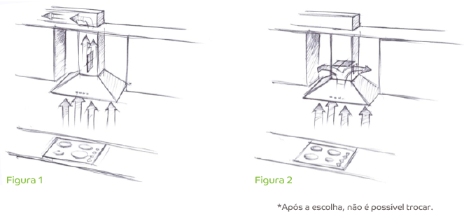
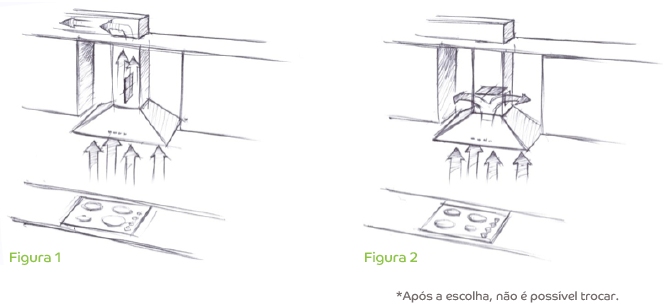
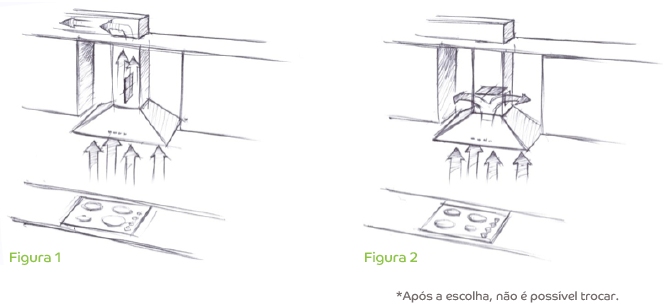
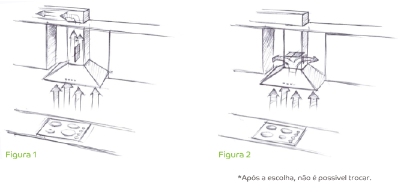
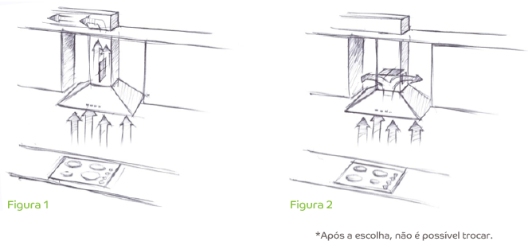

, que filtra o ar para um ambiente externo, ou Depurador (figura 2), que filtra o ar e o devolve para o mesmo ambiente.*") 

![Pré-instalação | Verifique alguns detalhes na área onde será instalada a coifa. As vezes, é necessária a criação de uma passagem para o tubo de exaustão ou até mesmo reforçar a parede para que ela consiga sustentar a coifa. Nesses casos, é preciso procurar um profissional especializado. A distância entre a superfície de seu fogão/cooktop com a coifa deve ser de 650mm. Se seu fogão tiver tampão de vidro, é recomendável verificar qual a distância entre o local a ser instalada a coifa e o fogão com o vidro do tampão aberto, pois a altura pode variar.](caracteristicas/saiba-mais/saiba-06.png "Pré-instalação | Verifique alguns detalhes na área onde será instalada a coifa. As vezes, é necessária a criação de uma passagem para o tubo de exaustão ou até mesmo reforçar a parede para que ela consiga sustentar a coifa. Nesses casos, é preciso procurar um profissional especializado. A distância entre a superfície de seu fogão/cooktop com a coifa deve ser de 650mm. Se seu fogão tiver tampão de vidro, é recomendável verificar qual a distância entre o local a ser instalada a coifa e o fogão com o vidro do tampão aberto, pois a altura pode variar.")
![Certo ou errado? Devo ligar a coifa apenas quando estiver cozinhando? ERRADO. Recomenda-se ligar a coifa 5 minutos antes de começar a cozinhar e mantê-la funcionando em torno de 15 minutos após terminar de cozinhar. Devo sempre utilizar a coifa na velocidade máxima? ERRADO. Inicialmente, a coifa deve ser ligada na velocidade mínima. Depois, é possível aumentar a velocidade aos poucos na medida em que começam a aparecer o vapor e a fumaça. Devo substituir o filtro de carvão ativado? CERTO. Não fazer a substituição do filtro de carvão ativado provoca aumento do nível de ruído da coifa. Por isso, faça a troca do mesmo de 5 em 5 meses ou com maior frequência se o uso for mais constante. Devo limpar o filtro de gordura? CERTO. Apesar do filtro metálico de gordura possuir duração ilimitada, sua manutenção deve ocorrer pelo menos uma vez ao mês. Você pode lavá-lo manualmente ou na lava-louças (utilize um ciclo curto com baixa temperatura). Se for lavado na lava-louças, a superfície do filtro poderá ficar opaca, mas isso não causará nenhuma redução em seu desempenho. Remova o filtro através de seu puxador e para colocá-lo no lugar, basta encaixar.](caracteristicas/saiba-mais/saiba-07.png "Certo ou errado? Devo ligar a coifa apenas quando estiver cozinhando? ERRADO. Recomenda-se ligar a coifa 5 minutos antes de começar a cozinhar e mantê-la funcionando em torno de 15 minutos após terminar de cozinhar. Devo sempre utilizar a coifa na velocidade máxima? ERRADO. Inicialmente, a coifa deve ser ligada na velocidade mínima. Depois, é possível aumentar a velocidade aos poucos na medida em que começam a aparecer o vapor e a fumaça. Devo substituir o filtro de carvão ativado? CERTO. Não fazer a substituição do filtro de carvão ativado provoca aumento do nível de ruído da coifa. Por isso, faça a troca do mesmo de 5 em 5 meses ou com maior frequência se o uso for mais constante. Devo limpar o filtro de gordura? CERTO. Apesar do filtro metálico de gordura possuir duração ilimitada, sua manutenção deve ocorrer pelo menos uma vez ao mês. Você pode lavá-lo manualmente ou na lava-louças (utilize um ciclo curto com baixa temperatura). Se for lavado na lava-louças, a superfície do filtro poderá ficar opaca, mas isso não causará nenhuma redução em seu desempenho. Remova o filtro através de seu puxador e para colocá-lo no lugar, basta encaixar.") 
